Raw averages make hospitals look different when mostly they are treating different patients. The spine of the report is a severity-adjusted comparison: every facility is scored against the stay and cost its own case mix predicts, so the pages can separate hospitals that are genuinely outliers from those that simply admit sicker people.
Every page exists twice, in a dark and a light theme, as true twins — same layout, same measures, same bookmarks, with slicer selections synced across the pair. Use the toggle on each screenshot below to switch between them.
Landing page

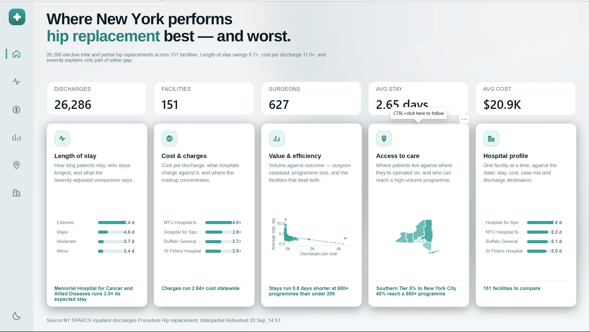
Length of stay
The state average stay is 2.65 days and the median is 2. That gap is the page's first point: the mean is pulled up by a thin tail, so a facility sitting above it is not automatically doing anything wrong. 113 of 151 facilities run above the stay their case mix predicts.
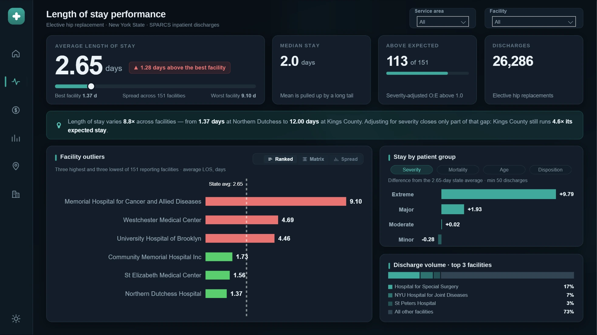
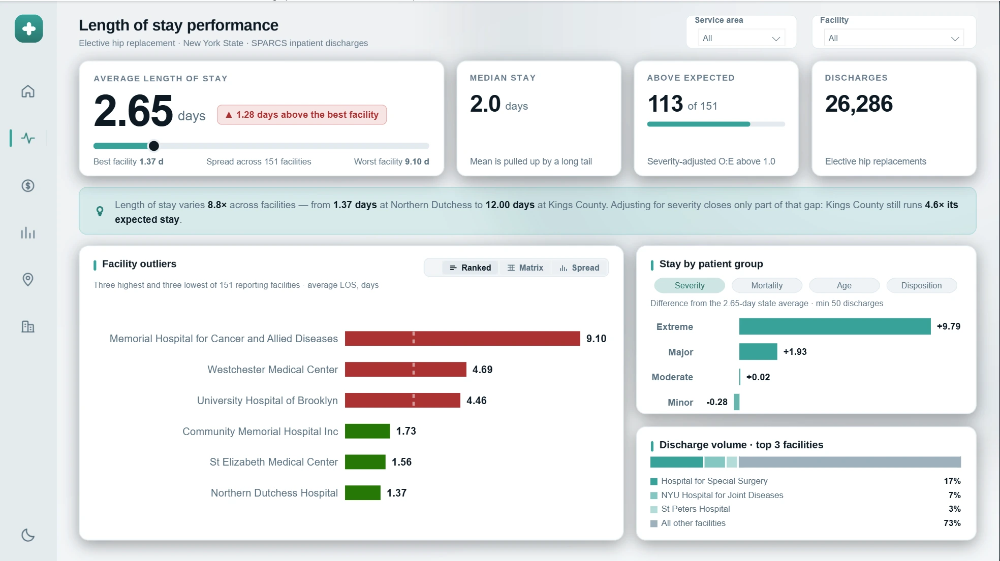
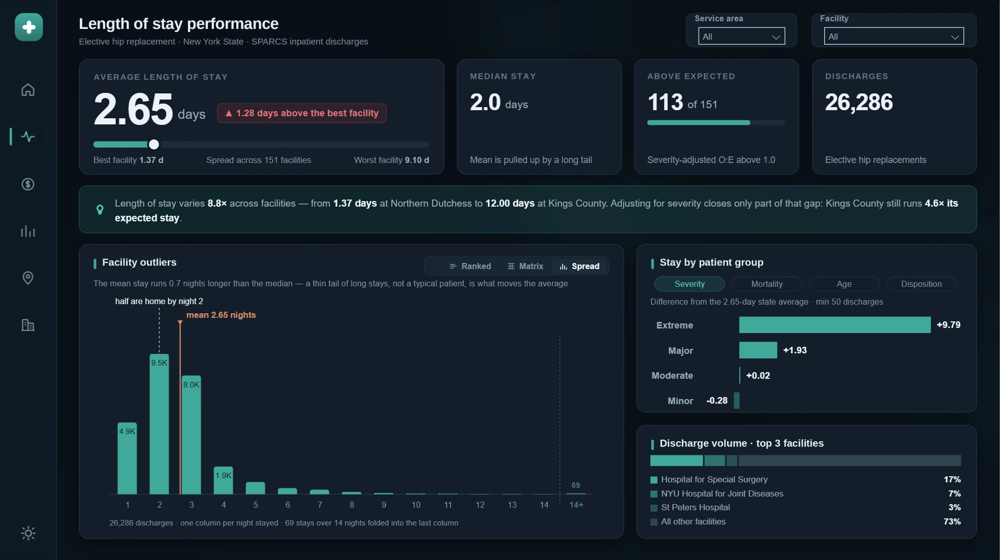
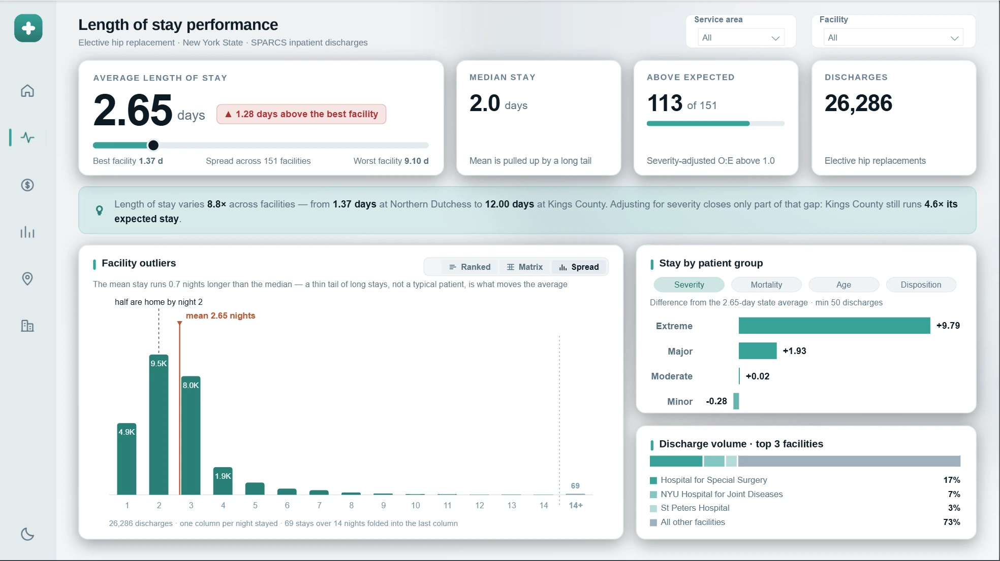
Cost and charges
Cost per discharge runs from $7.7K to $84.6K — an eleven-fold spread. What a hospital bills tracks what it spends only loosely: the statewide markup is 2.84×, and individual facilities sit a long way either side of it — some billing barely above cost, others several times it.
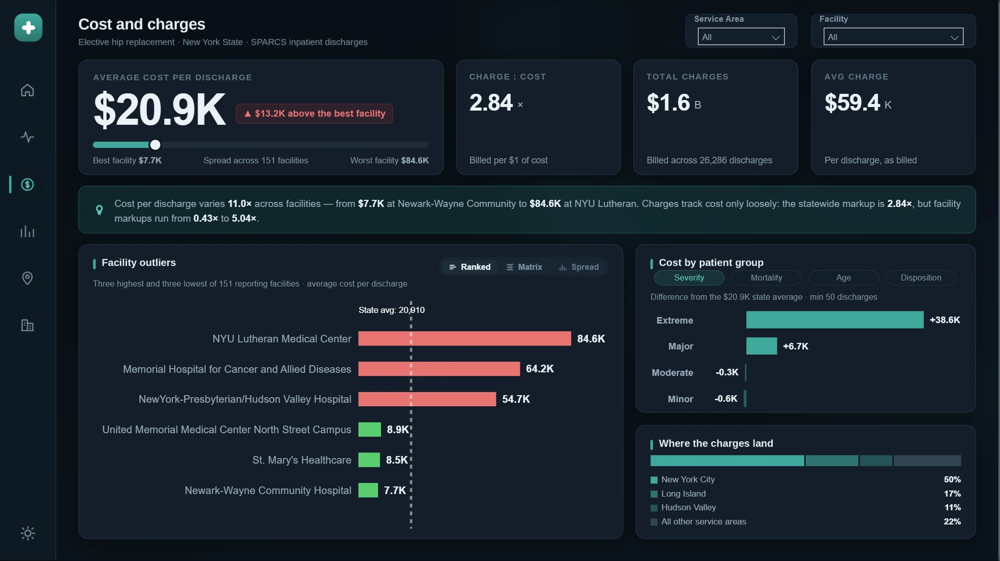
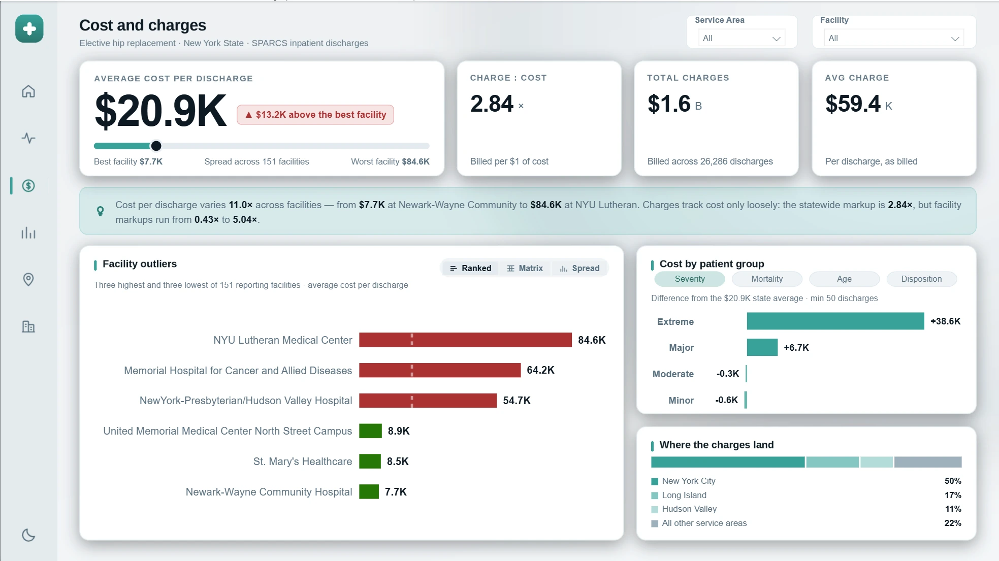
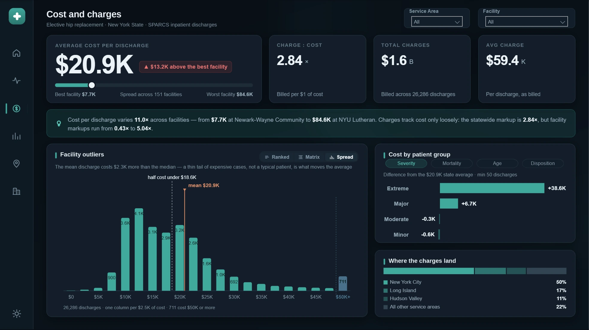
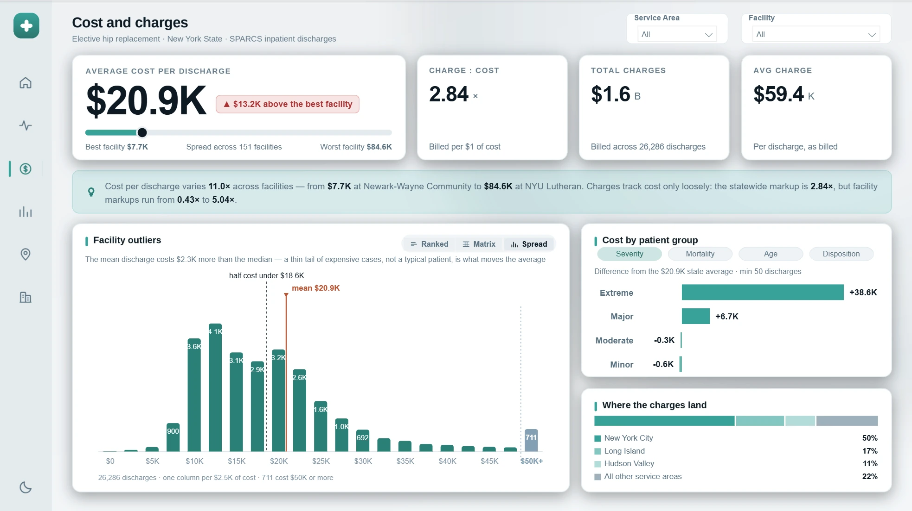
Value and efficiency
Does doing more of an operation make a hospital better at it? Only six of 151 programmes do 600 or more a year, and they handle 36% of the state's volume. Those programmes average 2.42 days against 3.20 at programmes under 200, and do it $2.0K cheaper per discharge — and the gap survives severity adjustment, at 0.92× expected stay against 1.20×.
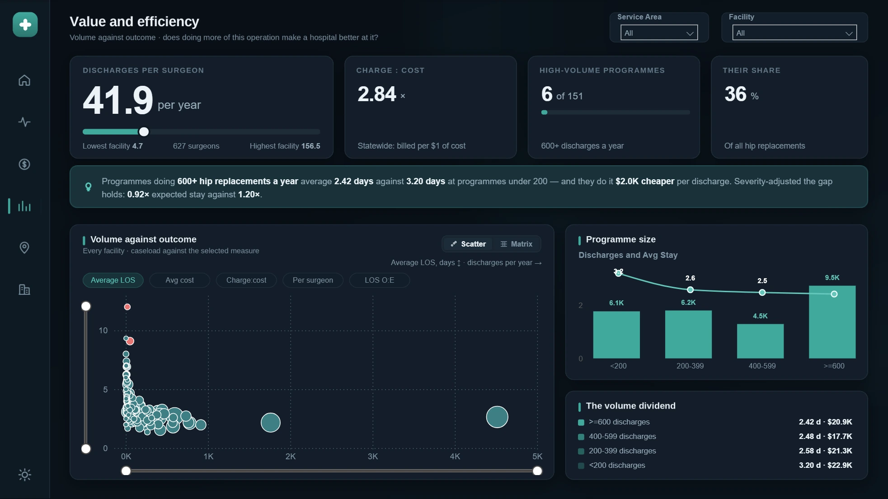
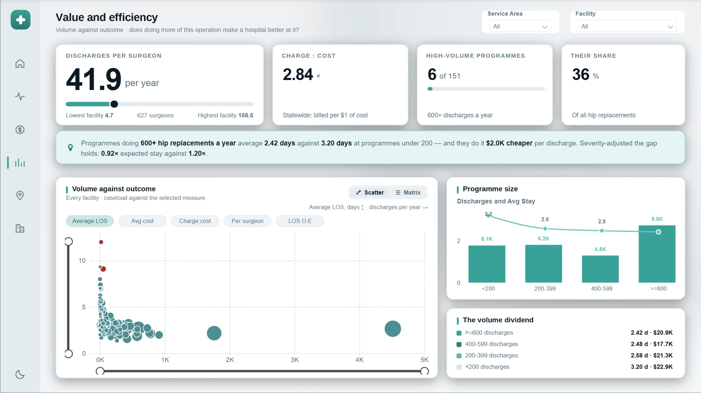
Access to care
If high-volume programmes really are better, who can reach one? Just 32% of New York residents having this operation do. Three of the eight service areas have no high-volume programme at all, and the spread runs from 5% of Southern Tier residents to 45% in New York City.
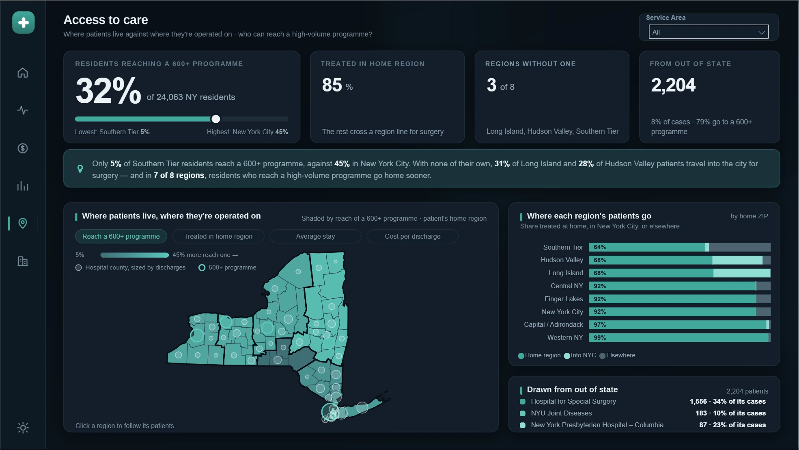
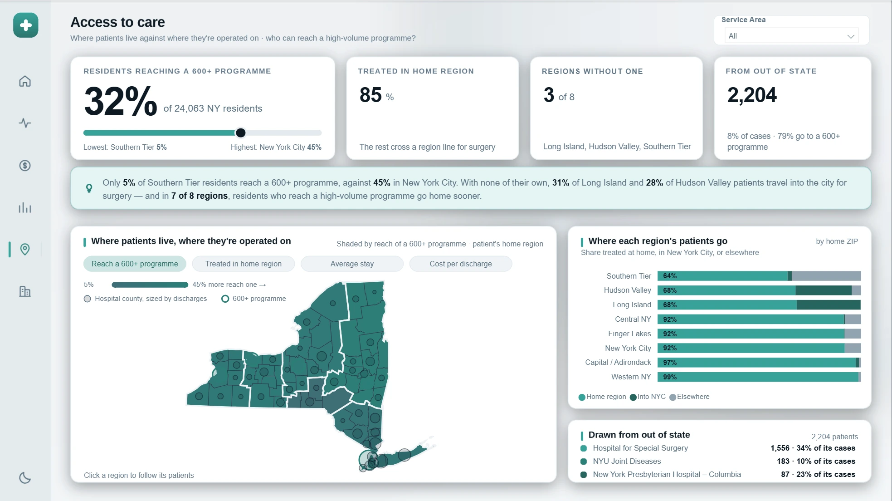
Hospital profile
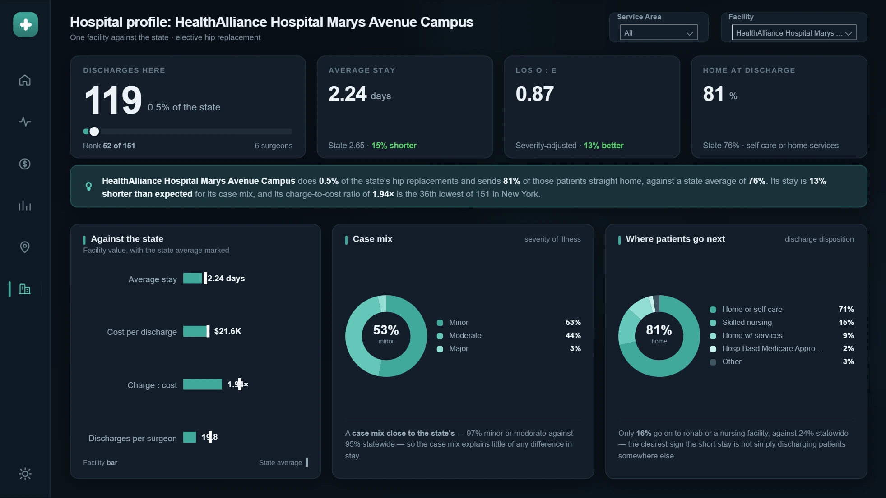
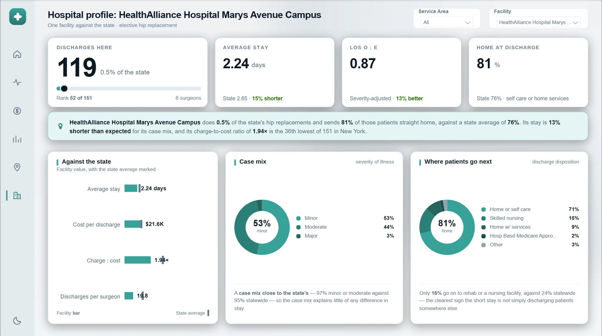
How it is built
Severity adjustment
Expected stay and expected cost come from indirect standardisation: each facility is scored against the statewide figure for its own severity mix, summed back over its case distribution. The observed-to-expected ratio is then what the pages actually rank on, rather than the raw average.
Written withSUMXover the severity values andALLEXCEPTto hold the severity level while releasing the facility — cheap evaluated once for the state, ruinous if evaluated per facility across 151 rows. Where that bit, the aggregation was restructured rather than the visual simplified.
Nothing on screen is typed twice
- All text is measure-driven. Titles, subtitles, insight sentences and tile footnotes are DAX. Every number and every hospital name in prose re-resolves under a filter instead of going stale.
- Display units follow magnitude. Figures switch between plain, K, M and B by size rather than carrying a fixed suffix, so the same measure reads correctly for one hospital or the whole state.
- Sentences are guarded. A selection that collapses a comparison rewrites the sentence rather than printing a degenerate one.
Custom visuals where the native ones could not reach
- Deneb (Vega, not Vega-Lite) for the distribution views, the region map and the range tracks — anywhere the shape of the answer mattered more than the convenience of a built-in chart.
- Banding lives in the model, not the spec. Stay and cost bands are calculated columns, because a visual can only cross-filter on a real column. Folding a tail inside the chart would make it a picture; folding it in the model keeps every bar a real value.
- HTML and SVG measures for the KPI tiles and range sliders, which gives exact control over layout and lets the same markup re-theme from the colour table.
Judgement calls worth naming
- A noise floor, with a reason. Breakdown bands under 50 discharges are blanked. The threshold was set against the data rather than picked: it sits below the smallest clinically real groups while excluding bands of fifteen or twenty patients that would otherwise top every ranking on delta alone.
- No trend analysis, deliberately. The extract carries a single discharge year. Rather than manufacture a time axis, the report states that every figure is a snapshot — a constraint named is better than a trend implied.
- Interactions are chosen, not defaulted. The distribution charts respond to slicers and to other visuals but do not filter outward: on a page where every measure is a function of stay length, emitting a filter on stay length would pin the variable and flatten the page.
Data
New York State SPARCS de-identified inpatient discharge data, filtered to elective total and partial hip replacements, for a single discharge year. The dataset is public and de-identified at source; no record identifies an individual.
The report definition, semantic model and source extract are not published in this repository.